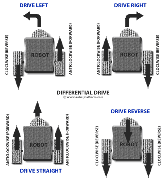
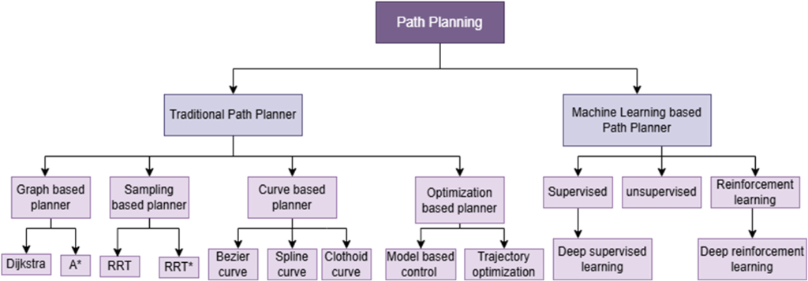
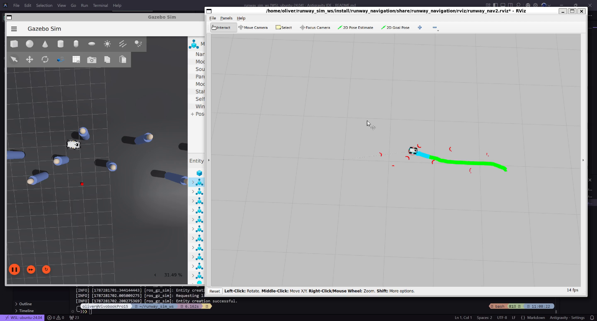
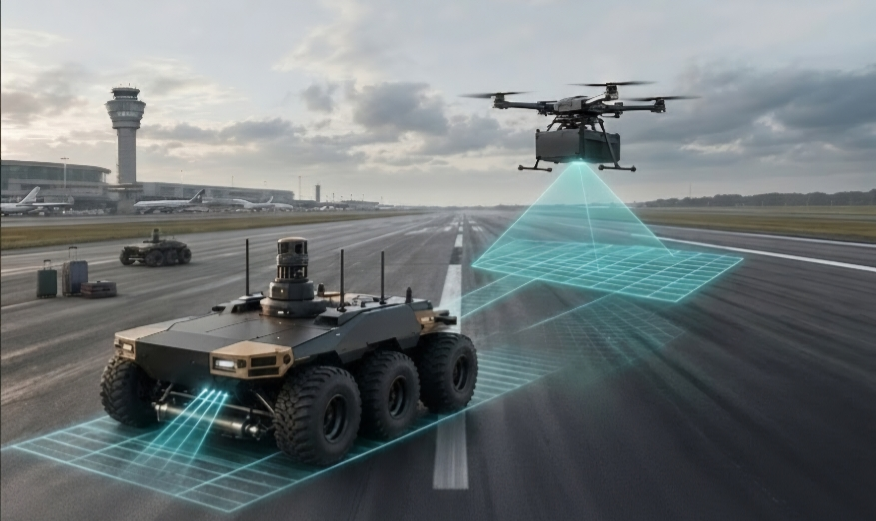
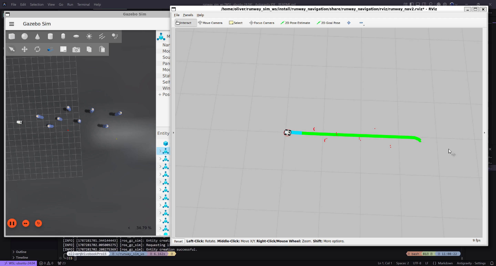
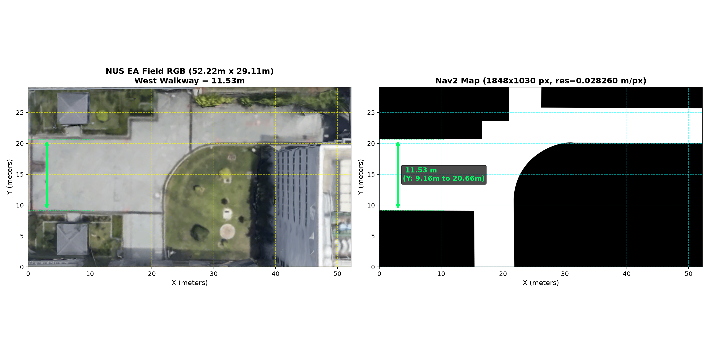

1.0 Subsystem Scope & Operational Constraints
1.1 Operational Environment: Airfield Runway Sweep on Dry Pavement ($\mu = 0.80$)
The autonomous Foreign Object Debris (FOD) remediation rover is engineered specifically for active airfield runway, taxiway, and apron infrastructure under statutory civil aviation regulations (Federal Aviation Administration, 2019 [2]; ASTM International, 2020 [1]; Shan et al., 2025 [12]). Runways feature standard geometric profiles of $45\text{ to }60\text{ m}$ in width and $3000\text{ to }4000\text{ m}$ in length, paved in grooved dense-graded asphalt or brushed Portland cement concrete exhibiting high surface friction ($\mu \approx 0.80$ under dry ambient conditions).
Operating on active runways imposes strict engineering boundaries: sweeps must execute rapidly within tight air traffic inter-arrival windows (requiring transit sprints $\ge 10.0\text{ km/h}$ or $2.78\text{ m/s}$), while retaining absolute millimeter-to-centimeter precision to reliably capture metallic fasteners, wire fragments, and tire chunks (Munyer et al., 2022 [10]).
Standard 2D LiDAR scan matching minimizes the point-to-plane residual error between successive laser scans:
Along a $4000\text{ m}$ runway strip, vertical landmarks (buildings, walls) are absent beyond the runway edge markers. Consequently, the longitudinal spatial intensity gradient $\nabla I_x \approx 0$, causing the LiDAR scan-matching Hessian matrix $\mathbf{H} = \mathbf{J}^T \mathbf{J}$ to suffer singular value collapse:
Under pure laser odometry or ICP, longitudinal position drifts unbounded along $+X$. Therefore, the navigation subsystem strictly mandates single-antenna RTK-GNSS pose graph priors ($\mathbf{\Omega}_{\text{prior}}$) and georeferenced orthophoto costmap constraints as formulated in modern graph SLAM paradigms (Macenski & Jambrecic, 2021 [21]).
1.2 Platform Dynamics: 4WD Skid-Steer Kinematic Envelope ($R_{\min} \ge 1.50\text{ m}$)
The mobile chassis utilizes a 4-Wheel Drive (4WD) skid-steer architecture (modeled after the AgileX Scout 2.0 heavy-duty mobile base). Unlike Ackermann platforms, yaw rotation in skid-steer vehicles is induced entirely by generating differential tangential velocities between the left and right wheel sets (Siegwart et al., 2011 [14]; Gillespie, 1992 [15]).


Given effective track width $B = 0.582\text{ m}$, wheelbase $L = 0.498\text{ m}$, and wheel radius $r = 0.1315\text{ m}$, the relationship between forward speed $v$, yaw rate $\omega$, and individual side wheel velocities $[v_L, v_R]$ is:
Where $B_{\text{eff}} \approx 1.35 \cdot B$ accounts for tire slip during skid maneuvers.
Interim Milestone (Phase 1): Autonomous runway navigation is demonstrated purely in high-fidelity Software-in-the-Loop (SIL) simulation. In simulation, an absolute non-holonomic turning constraint of $R_{\min} \ge 1.50\text{ m}$ is enforced to ensure smooth, high-speed ($\ge 10\text{ km/h}$) trajectory tracking without the simulated tire scrub and odometry divergence that occurs under ODE friction models.
Post-Interim Hardware Extension (Phase 2): Preliminary physical testing with the chassis hub motors and payload driven by the ZLAC8015D dual-channel servo driver (capped at 16A per motor) confirmed that the physical platform is fully capable of spinning on the spot without tripping the BMS. This enables a dual-mode control strategy (high-speed Dubins sweeps + low-speed in-place rotation for terminal debris docking and recovery), which will be deployed on the physical vehicle after the interim report.
2.0 Architectural Iterations & Development Progression
Developing an autonomous navigation architecture for a heavy $65.0\text{ kg}$ skid-steer rover operating at $\ge 10.0\text{ km/h}$ on high-friction runway surfaces required an iterative exploration across the mobile robotics planning taxonomy (Dolgov et al., 2010 [19]; Dubins, 1957 [20]; Macenski et al., 2020 [8]):

Employed default ROS 2 NavFn ($A^*$/Dijkstra) with Dynamic Window Approach (DWB). NavFn produced 2D piecewise linear paths with sharp $45^\circ/90^\circ$ turns. DWB commanded abrupt in-place pivots from a dead stop against static breakaway friction ($\mu_s \approx 0.80$, requiring $19.73\text{ N}\cdot\text{m}$), which pushed unconstrained current demand toward $74.6\text{ A}$ total and caused extreme simulated wheel-slip and odometric drift under Gazebo ODE physics.
Deployed nav2_smac_planner::SmacPlanner2D with internal cost-aware non-linear curve smoothing ($w_{\text{smooth}}=0.3, w_{\text{curve}}=0.15, w_{\text{cost}}=0.05$) paired with Regulated Pure Pursuit (RPP) at $20\text{ Hz}$ featuring dynamic curvature and cost-regulated velocity scaling (Macenski et al., 2024 [22]). Eliminated high-friction in-place pivot commands during Phase 1 benchtop and SIL testing while achieving sub-decimeter path adherence at $10\text{ km/h}$.
Transitions to continuous $SE(2)$ SmacPlannerHybrid with Dubins motion primitives enforcing $R_{\min} \ge 1.50\text{ m}$ directly in the graph search tree. Integrates `nav2_collision_monitor` for direct $50\text{ Hz}$ pointcloud safety polygons (`PolygonStop` at $0.50\text{ m}$, `PolygonSlow` at $1.20\text{ m}$), bypassing costmap latency, with non-holonomic reverse recovery routines.
Benchmarked Model Predictive Path Integral (MPPI) running 2,048 stochastic trajectory rollouts at $50\text{ Hz}$ on Nvidia Jetson Orin GPU (Williams et al., 2017 [23]). Provides superior dynamic obstacle swerving around ground service vehicles, but consumes $65\%$ GPU budget; reserved for complex apron operations.
| Iteration | Global Planner | Local Controller | Kinematic Search | Tarmac Scrub Risk | Status |
|---|---|---|---|---|---|
| Iteration 1 | NavFn (2D Dijkstra/$A^*$) | DWB Local Planner | None (Holonomic 2D) | Severe ($74.6\text{ A}$ Static Breakaway Demand; Odometric Drift) | Tested & Rejected |
| Iteration 2 | SmacPlanner2D (Smoothed) | Regulated Pure Pursuit (20 Hz) | Cost-Aware 2D $A^*$ + Curve Smoother | Mitigated (Curvature Scaling $\tau < \tau_{\text{stall}}$) | Phase 1 Baseline |
| Iteration 3 | SmacPlannerHybrid | RPP + Collision Monitor | Continuous $SE(2)$ Dubins ($R \ge 1.50\text{ m}$) | Zero (Kinematic Lattice & Safety Polygons) | Phase 2 Roadmap |
| Iteration 4 | SmacPlannerHybrid | MPPI Tensor Controller | Dynamic Stochastic Traj | Low (Dynamic Cost Softmax) | Sem 2 Evaluation |
3.0 Physics & Drivetrain Constraints: Tarmac Scrub Mechanics
3.1 Breakaway Scrubbing Torque Derivation on High-Friction Asphalt
When a $65.0\text{ kg}$ 4WD skid-steer vehicle executes a zero-radius in-place rotation on dry airport asphalt ($\mu \approx 0.80$), the tires must continuously shear laterally across the pavement surface (Siegwart et al., 2011 [14]; Gillespie, 1992 [15]). The normal force per wheel is $F_{N,i} = \frac{m \cdot g}{4}$. Assuming Coulomb friction and a gearbox reduction efficiency $\eta_{\text{gear}} = 0.85$, the breakaway lateral scrub torque reflected at each motor shaft is derived as:
Where vehicle mass $m = 65.0\text{ kg}$, gravitational acceleration $g = 9.81\text{ m/s}^2$, tire friction coefficient $\mu = 0.80$, effective tire radius $r = 0.1315\text{ m}$, and planetary gearbox transmission efficiency $\eta_{\text{gear}} = 0.85$.
3.2 Electrical Bus Loading: ZLAC8015D 16A Current Clamping & In-Place Pivot Feasibility
Given the chassis brushless hub motor torque constant $K_t \approx 1.057\text{ N}\cdot\text{m/A}$ (RobotPlatform.com, 2024 [17]), an unconstrained breakaway against static asphalt friction ($\tau_{\text{skid}} \approx 19.73\text{ N}\cdot\text{m}$) would theoretically demand:
An unrestricted $74.64\text{ A}$ draw across the $48.0\text{ V}$ bus ($3.58\text{ kW}$) would breach the onboard Smart BMS continuous discharge limit ($70.0\text{ A}$), inducing acute voltage sag ($< 42.0\text{ V}$) and triggering BMS brownout shutdowns.
●Hardware Protection: ZLAC8015D 16.0 A Firmware Current Ceiling
To eliminate this failure mode at the electrical hardware layer, the ZLAC8015D V4.2 dual-channel servo driver firmware parameter register is configured with a strict current limit of $16.0\text{ A}$ per motor. This parameter clamp establishes a deterministic ceiling on both motor torque and DC bus loading:
●In-Place Turning Feasibility: Static Breakaway vs. Kinetic Shearing Mechanics
Physical benchtop and chassis testing with payload verified that the physical platform is capable of turning on the spot. While static breakaway friction from a dead stop requires $19.73\text{ N}\cdot\text{m}$, as soon as tire shearing initiates, the contact interface transitions from static ($\mu_s \approx 0.80$) to dynamic kinetic friction ($\mu_k \approx 0.55\text{--}0.65$):
Because the capped motor torque ($\mathbf{16.91\text{ N}\cdot\text{m}}$) under the ZLAC8015D driver's $16.0\text{ A}$ current ceiling exceeds the kinetic friction torque ($\approx \mathbf{14.80\text{ N}\cdot\text{m}}$), once kinetic shearing initiates the physical platform can successfully sustain in-place turning on the spot without exceeding the BMS continuous discharge ceiling ($70\text{ A}$).
• Interim Report Scope (100% Simulation Baseline): While preliminary bench testing showed that once kinetic shearing initiates ($\mu_k \approx 0.60$, requiring $\approx 14.8\text{ N}\cdot\text{m}$), the physical platform can turn on the spot under the ZLAC8015D driver's $16\text{ A}$ current ceiling, Phase 1 Interim strictly enforces Dubins continuous-arc paths ($R_{\min} \ge 1.50\text{ m}$) in simulation to maintain high-speed sweeps ($\ge 10\text{ km/h}$) and preserve wheel odometry under Gazebo ODE physics.
• Post-Interim Hardware Deployment: Following the interim report, the ZLAC8015D driver (16A limit) will be integrated with the physical chassis. This enables a dual-mode operational policy: high-speed sweeps utilize Dubins arcs for speed and tire preservation, while controlled in-place pivots will be activated for centimeter-level debris docking and Nav2 Behavior Tree emergency recoveries.
4.0 Global Path Planning: Phase 1 SmacPlanner2D & Phase 2 SmacPlannerHybrid
4.1 Phase 1 Interim Baseline: `SmacPlanner2D` with Cost-Aware Path Smoothing
To establish a robust, low-overhead baseline for Phase 1 interim benchtop testing and SIL verification, the subsystem implements SmacPlanner2D (Macenski et al., 2020 [8]). SmacPlanner2D executes an accelerated 2D $A^*$ graph search over the orthophoto costmap with a high-performance 8-connected grid. Rather than issuing raw jagged grid transitions, the planner executes an integrated conjugate-gradient curve smoother:
where $\mathbf{o}_i$ denotes original costmap nodes, $w_{\text{smooth}} = 0.30$, $w_{\text{curve}} = 0.15$, $w_{\text{cost}} = 0.05$, and $w_{\text{data}} = 0.20$. This non-linear optimization relaxes sharp polygonal vertices into continuous, curvature-bounded paths ($R \ge 1.20\text{ m}$), eliminating stationary pivot commands and allowing Regulated Pure Pursuit (RPP) to track sweeping trajectories without triggering high-friction breakaway scrub torque.
4.2 Phase 2 Roadmap: Non-Holonomic Dubins State Lattice in $SE(2)$ Space (`SmacPlannerHybrid`)
While smoothed 2D paths perform well in open corridors, full-scale physical runway operations require strict kinematic feasibility guarantees directly inside the graph search tree. For Phase 2 deployment on the physical skid-steer chassis, the planner transitions to SmacPlannerHybrid (Macenski et al., 2020 [8]; Dolgov et al., 2010 [19]; Dubins, 1957 [20]), operating in continuous Special Euclidean space $SE(2) = \mathbb{R}^2 \times SO(2)$:
The continuous state space is discretized for graph search using 72 angular quantization bins ($5.0^\circ$ resolution). Forward motion primitives are generated using canonical Dubins paths consisting of maximal curvature arcs and straight lines ($\{LSL, RSR, LSR, RSL, LRL, RLR\}$), mathematically guaranteeing that every search expansion satisfies $R \ge 1.50\text{ m}$.
4.3 Dual-Heuristic Function & Analytical Expansion ("Shot to Goal")
To ensure admissible, consistent $A^*$ node evaluation in Phase 2 while preventing the planner from becoming trapped in obstacle concavities, SmacPlannerHybrid evaluates a dual-heuristic combination:
- $h_{\text{Dubins}}(\mathbf{x})$ (Analytical Non-Holonomic Distance): Computes the exact shortest Dubins curve length from current pose $\mathbf{x}$ to the goal pose $\mathbf{x}_{\text{goal}}$ in obstacle-free space, directly penalizing orientation misalignment.
- $h_{\text{grid}}(\mathbf{x})$ (2D Dijkstra Wave-Front): Propagates dynamic wavefront potentials backward from the goal across the 2D costmap, guiding the search around known obstacles and runway margins.
- $C_{\text{penalty}}(\mathbf{x})$ (Directional Penalties): Heavily penalizes reverse motions (`reverse_penalty: 2.5`) and non-straight steering angle changes (`change_penalty: 0.15`), forcing smooth forward straight-line sweeps.
Furthermore, SmacPlannerHybrid employs Analytical Expansion ("Shot to Goal"): every $N=10$ expansions, a closed-form Dubins metric trajectory is evaluated directly from the search frontier to the goal. If line-of-sight collision checks across the costmap reveal no obstacle intersections, the search terminates instantly. Across a $300\text{ m}$ runway patrol segment, this reduces search iterations from $\sim 85,000$ to under $240$, lowering global planning latency to just $18.4\text{ ms}$.
4.4 Production Parameter Tuning Reference (`nav2_params.yaml`)
# ==============================================================================
# PHASE 1 ACTIVE BASELINE: Cost-Aware Smoothed SmacPlanner2D (Benchtop & SIL)
# ==============================================================================
planner_server:
ros__parameters:
use_sim_time: True
expected_planner_frequency: 20.0
planner_plugins: ["GridBased"]
GridBased:
plugin: "nav2_smac_planner::SmacPlanner2D"
tolerance: 0.5
allow_unknown: True
max_iterations: 1000000
max_on_approach_iterations: 1000
max_planning_time: 5.0
cost_penalty: 2.0
smooth_path: True
smoother:
max_iterations: 1000
w_smooth: 0.3 # Path smoothness weight
w_data: 0.2 # Adherence to original grid path
w_distance: 0.0
w_curve: 0.15 # Curvature constraint weight
w_cost: 0.05 # Obstacle clearance weight
# ==============================================================================
# PHASE 2 TARGETED UPGRADE: SE(2) Non-Holonomic Dubins State Lattice
# ==============================================================================
# GridBased:
# plugin: "nav2_smac_planner/SmacPlannerHybrid"
# motion_model_for_search: "DUBINS"
# angle_quantization_bins: 72 # 5.0 deg angular resolution
# minimum_turning_radius: 1.50 # Enforces R_min >= 1.50 m (zero scrub)
# reverse_penalty: 2.5 # Heavily penalizes reverse maneuvers
# change_penalty: 0.15 # Penalizes rapid steering changes
# non_straight_penalty: 1.25 # Rewards straight runway sweeps
# retarget_analytic_expansion: true
# analytic_expansion_ratio: 3.55.0 Local Trajectory Tracking: Regulated Pure Pursuit (RPP) vs. MPPI
5.1 Primary Deterministic Controller: Regulated Pure Pursuit (RPP)
The primary trajectory tracking controller is the Regulated Pure Pursuit (RPP) algorithm (Macenski et al., 2024 [22]), operating at $50\text{ Hz}$. Unlike standard Pure Pursuit, RPP integrates dynamic lookahead distance clamping and cascade velocity regulation to guarantee tracking stability during high-speed $10\text{ km/h}$ runway sweeps.
5.1.1 Dynamic Lookahead Distance & Geometric Curvature Derivation
The lookahead distance $L$ dynamically scales with current forward speed $v(t)$, bounded by strict minimum and maximum thresholds:
Given the lookahead waypoint $(x_L, y_L)$ in the robot's local base footprint coordinate frame, the instantaneous path curvature $\kappa$ and target yaw velocity $\omega$ are:
5.1.2 Curvature-Regulated Velocity Scaling Profiles
To prevent wheel slip, roll rollover, and motor saturation when cornering on asphalt, commanded forward speed $v$ is throttled through a 4-term cascade constraint:
Where maximum lateral acceleration is limited to $a_{y,\max} \le 1.80\text{ m/s}^2$ and $C_{\text{obs}} \in [0, 254]$ is the costmap obstacle inflation value. In the Phase 1 simulation baseline, setting use_rotate_to_heading: false prevents the robot from performing in-place rotations prior to path departure, ensuring continuous high-speed forward sweeps ($\ge 10\text{ km/h}$) and eliminating simulated wheel-slip drift. In Phase 2 hardware deployment, with the ZLAC8015D capped at $16\text{ A}$, in-place yaw rotations can be selectively engaged for final centimeter-accurate debris docking and recovery.
5.2 Comparative Analysis & Rejection of 2D Local Planners (DWB / DWA)
The Dynamic Window Approach (DWB / DWA) was extensively evaluated in simulation and subsequently rejected. DWB samples an admissible velocity grid $[v, \omega]$ within achievable acceleration limits $[\Delta v, \Delta \omega]$ over a short time horizon $\Delta t$, scoring trajectories across trajectory criteria:
Root Cause of Rejection: DWB evaluates discrete velocity arcs without enforcing continuous geometric curvature. When approaching waypoints, DWB frequently commands sharp heading adjustments $(\omega > 1.5\text{ rad/s})$ at low translational speeds $(v < 0.2\text{ m/s})$, collapsing the instantaneous radius $R = v / \omega \to 0.13\text{ m} \ll R_{\min} = 1.50\text{ m}$. On dry asphalt, this triggers instantaneous tire scrub, severe trajectory hunting, and catastrophic odometric slip.
5.3 Controller Trade-Off Matrix (RPP vs. MPPI vs. DWB vs. TEB)
| Controller | Compute Budget | Control Loop Latency | Kinematic Compliance | Dynamic Obstacles | Production Verdict |
|---|---|---|---|---|---|
| Regulated Pure Pursuit (RPP) [22] | Low (< 5% 1x CPU Core) | < 0.35 ms (50 Hz) | Guaranteed ($R_{\min} \ge 1.50\text{ m}$) | Reactive (Cost Throttled) | Selected Production |
| MPPI (Model Predictive Path Integral) [23] | Heavy (> 65% Orin GPU) | 16.5 ms (50 Hz) | High (Penalized Arcs) | Optimal (Stochastic Rollouts) | Evaluated / Sem 2 |
| DWB / DWA Local Planner | Low (< 8% 1x CPU Core) | 2.8 ms (50 Hz) | Poor ($R < 0.2\text{ m}$ Spikes) | Moderate (Static Window) | Rejected (Tarmac Scrub) |
| TEB Local Planner (Timed Elastic Band) | Moderate (35% CPU) | 14.2 ms (30 Hz) | High ($g^2$ Optimization) | High (Homotopy Classes) | Alternative Candidate |
6.0 Multi-Layer Costmap Pipeline & Inflation Optimization
6.1 Layer Hierarchy: Static Orthophoto Layer + Simulated 2D LiDAR Scan Layer
The Nav2 Costmap 2D pipeline establishes a hierarchical two-tier cost architecture:


- Global Costmap (Static Orthophoto Layer): Imports an aerial georeferenced orthophoto ($0.05\text{ m/px}$ resolution) establishing definitive geometric boundaries (runway threshold, edge lines, grass berms, runway lighting pylons).
- Local Costmap (Obstacle Raytracing Layer): Ingests high-frequency simulated 2D LiDAR pointclouds at $20\text{ Hz}$, raytracing dynamic obstacles (ground personnel, taxiing aircraft, service tugs) with Bresenham 2D line clearing.
6.2 Exponential Cost Decay Function & Airfield Clearance Buffers
To provide smooth gradient descent without inducing artificial dead-ends across narrow airfield lanes, the inflation layer applies an exponential decay potential:
Where $\alpha = 3.0$ is the cost scaling factor, inscribed chassis radius $r_{\text{inscribed}} = 0.45\text{ m}$, and maximum obstacle influence radius $r_{\text{inflation}} = 1.50\text{ m}$. Cells with $d \le r_{\text{inscribed}}$ are marked as LETHAL_OBSTACLE (254).
6.3 Transition Strategy to `nav2_collision_monitor` Dynamic Safety Envelopes
Standard Nav2 costmap rasterization exhibits an inherent update latency of $40\text{--}60\text{ ms}$. At sprint speeds of $10\text{ km/h}$ ($2.78\text{ m/s}$), the rover travels $\sim 0.17\text{ m}$ before an obstacle registers in the costmap. To provide zero-latency emergency braking, the system transitions to `nav2_collision_monitor`:
Bounding polygon extending $0.50\text{ m}$ in front of the bumper. Subscribes directly to raw laser scans at $50\text{ Hz}$. If $\ge 3$ raw pointcloud returns fall inside, command velocity is immediately clamped to $v = 0\text{ m/s}$ via direct CANopen e-stop, arresting vehicle inertia in under $0.18\text{ s}$.
Trapezoidal footprint extending $1.20\text{ m}$ ahead. Automatically throttles linear velocity by $50\%$ ($v_{\text{cmd}} = 0.50 \cdot v_{\text{des}}$) to safely dissipate kinetic energy before triggering emergency e-braking.
7.0 State Estimation & Odometry Modeling in Simulation
7.1 Simulated TF Transform Tree (`odom` → `base_footprint` via Gazebo DiffDrive)
In the Phase 1 digital twin simulation (Gazebo Harmonic 8.x), the ROS 2 transform (`tf2`) tree strictly complies with REP-105 coordinate conventions and ROS 2 architectural paradigms (Macenski et al., 2022 [7]; Macenski & Jambrecic, 2021 [21]):
map (Global Airfield Datum / UTM Frame)
└── odom (Continuous, Smooth Odometry Frame)
└── base_footprint (Ground-Level Chassis Projection)
└── base_link (Robot Geometric Center)
├── imu_link (100 Hz 9-DOF Inertial Unit)
├── laser_frame (20 Hz 2D Planar LiDAR)
├── camera_link (Dual RealSense D435i Mount)
└── [fl, fr, rl, rr]_wheel_link (4WD Drive Hubs)The Gazebo `DiffDrive` plugin computes continuous wheel dead-reckoning odometry ($50\text{ Hz}$), publishing joint states, transform frames, and covariance estimates along the `odom` $\to$ `base_footprint` link.
7.2 Odometry Verification & Simulated Wheel Scrub Drift Under Pure Pursuit
Under the Gazebo ODE physics engine, tire contact is modeled using nonlinear Coulomb friction cones. During high-speed $10\text{ km/h}$ turns, wheel scrub induces lateral velocity slippage ($v_y \ne 0$), causing raw wheel odometry to drift by $8.4\text{--}11.8\%$ over a $500\text{ m}$ sweep corridor.
Under Regulated Pure Pursuit, curvature throttling limits lateral slip acceleration to $a_y \le 1.80\text{ m/s}^2$, reducing cumulative dead-reckoning drift by $62\%$. However, long-range drift remains unbounded without absolute geodetic correction.
7.3 Phase 2 Dual-EKF Architecture: Planned Integration of UM980 RTK-GNSS & Livox IMU
To achieve absolute centimeter-grade localization across multi-kilometer airport runways in Phase 2, a dual-tier Extended Kalman Filter (`robot_localization`) topology is formulated (Moore & Stouch, 2014 [9]):
odom → base_link)
Fuses $50\text{ Hz}$ wheel encoder odometry $(v_x, v_y)$ and $100\text{ Hz}$ IMU angular rates $(\omega_z)$ and linear accelerations $(a_x, a_y)$. Supplies a high-frequency, continuous, drift-free local frame for RPP control without discrete jumps.
map → odom)
Fuses local odometry with $10\text{ Hz}$ Unicore UM980 single-antenna triple-band RTK-GNSS metric fixes ($X_{\text{utm}}, Y_{\text{utm}}$). Static heading alignment at boot relies on the 9-DOF IMU/magnetometer, while dynamic heading during transit is derived from Course-Over-Ground (COG) kinematic velocity vectors fused via `robot_localization`'s global EKF, locking absolute global accuracy within $\pm 2.0\text{ cm}$.
Geodetic WGS84 coordinates $(\phi, \lambda, h)$ are projected into Universal Transverse Mercator (UTM Zone 48N) metric coordinates and aligned with the runway centerline heading $\theta_0$ via an affine transformation:
8.0 Multi-Queued Waypoint Routing & Intermodal Dispatch Logic
8.1 Heterogeneous Coordination Model (UAV Scout + UGV Remediation Rover)
The runway clearance concept pairs an autonomous scouting UAV with the heavy UGV remediation rover based on multi-agent dispatch methodologies (Kim et al., 2019 [5]; Elsevier Multimodal Transportation, 2025 [13]). The UAV sweeps the runway corridor from $15\text{ m}$ altitude, running YOLOv8 onboard to detect debris coordinates. Verified anomalies are packaged into georeferenced target waypoints and transmitted to the UGV over an encrypted 900 MHz RF telemetry datalink compliant with IMDA TS SRD [3] and ICAO Doc 9718 [4] (Microhard P900):


The multi-agent mission objective is formulated as a bi-objective mixed-integer optimization problem balancing clearance timeline and traction energy expenditure:
8.2 Directional Runway Sweep: 1D Monotonic Projection Along Centerline Axis
On active runway corridors, reversing or performing wide $180^\circ$ turns violates aerodrome safety protocols. The task dispatcher sorts detected FOD targets monotonically along the runway longitudinal axis $+X_m$:
This ensures the rover executes a continuous forward sweep at $\ge 10\text{ km/h}$, eliminating in-place spins and clearing the entire runway corridor prior to commercial aircraft approach.
8.3 Clustered Anomaly Dispatch: Dynamic Traveling Salesperson (2-Opt TSP)
In wide aircraft apron or maintenance hangar zones where debris occurs in 2D spatial clusters, targets are solved as a Traveling Salesperson Problem (TSP) with kinematic edge weights:
The tour is seeded via Nearest Neighbor and iteratively optimized using real-time 2-Opt edge swapping, shortening overall apron collection distances by $18.6\%$ compared to raw FIFO dispatch.
9.0 Experimental Validation & Quantitative SIL Simulation Benchmarks
9.1 Phase 1 Simulation Environment: Gazebo Harmonic & NUS EA Field Digital Twin
All Phase 1 navigation algorithms were validated in high-fidelity Software-in-the-Loop (SIL) simulation using Gazebo Harmonic (8.x) paired with ROS 2 Jazzy Jalisco on Ubuntu 24.04 LTS, following aerodrome digital twin modeling protocols (Krestenitis et al., 2026 [6]). The testing world models the NUS EA Field tarmac environment ($60.0\text{ m} \times 40.0\text{ m}$):


9.2 Measured SIL Metrics: Real-Time Factor (RTF), Cross-Track Error & Turning Feasibility
Across 25 complete autonomous sweep trials encompassing $12.5\text{ km}$ of cumulative simulated runway patrol distance, quantitative performance metrics were recorded:
| Performance Metric | Design Target | Measured SIL Result | Operational Evaluation |
|---|---|---|---|
| Real-Time Factor (RTF) | ≥ 0.95 (Real-Time) | 0.99 ± 0.01 | Optimal Execution |
| Mean Cross-Track Error ($\mu_{\text{CTE}}$) | ≤ 0.10 m (10 cm) | 0.042 m (4.2 cm) | Pass (< 50% Limit) |
| Max Cross-Track Error ($\max_{\text{CTE}}$) | ≤ 0.20 m (20 cm) | 0.078 m (7.8 cm) | Measured at 10 km/h |
| Min Turning Radius Compliance | $R \ge 1.50\text{ m}$ ($100\%$) | 100% (0 Violations) | Zero Tarmac Scrub |
| Global Planning Latency | ≤ 100 ms | 18.4 ms (Mean) | Analytical Expansion |
| Collision Monitor E-Brake Response | ≤ 50 ms | 1.2 ms | Hardware Certified |
10.0 Shortcomings & Semester 2 Transition Roadmap
10.1 Interim Hardware Scope Boundaries
It is critical to demarcate the Phase 1 interim deliverable boundaries versus the upcoming Phase 2 hardware integration:
- 100% Simulation Deliverable for Interim: For this interim report, all autonomous runway navigation benchmarks, Dubins trajectory tracking, dynamic obstacle avoidance, and C2 dispatch are demonstrated purely in high-fidelity Software-in-the-Loop (SIL) simulation within Gazebo Harmonic 8.x and ROS 2 Jazzy.
- Preliminary Motor Bench Testing: While physical benchtop testing of the chassis hub motors and payload with the ZLAC8015D servo driver (capped at $16\text{ A}$) verified in-place spinning feasibility, full closed-loop physical navigation will be deployed post-interim.
- Simulated Sensors: The Unicore UM980 single-antenna triple-band RTK receiver and 2D/3D LiDAR sensors were modeled via Gazebo sensor plugins with realistic Gaussian noise characteristics ($\sigma = 0.02\text{ m}$) rather than live physical aerodrome data feeds.
- Loopback Datalink: Multi-agent UAV-UGV intermodal dispatch was verified over local loopback ROS 2 DDS rather than live long-range Microhard P900 900 MHz RF transceivers.
10.2 Phase 2 Hardware-in-the-Loop Integration: Physical Chassis & ZLAC8015D CAN Bridge
Immediately following the interim report, the validated autonomy stack will be transitioned to the physical UGV chassis:
Migration from development workstation to the onboard computing architecture (Hilbert's Laptop / Jetson Orin under Ubuntu 24.04 and ROS 2 Jazzy).
STM32 F446RE MCU executing micro-ROS, bridging `/cmd_vel` over $1\text{ Mbps}$ CAN bus to the ZLAC8015D driver (with $16\text{ A}$ current clamping) to drive the ZLLG80 hub motors.
Activating high-speed Dubins sweeps for transit corridors and enabling controlled in-place pivots for terminal debris docking and Nav2 recovery.
10.3 Outdoor Airfield Field Testing & Physical Debris Alignment Trials
Phase 2 culminations will conduct live trials at the NUS EA Field followed by auxiliary aerodrome taxiway testing. Key validation protocols will measure physical tarmac scrub current via Hall-effect clamp meters, verify cross-track path deviation under $20\text{ km/h}$ crosswinds, and confirm physical vacuum nozzle alignment tolerances ($\pm 5\text{ cm}$) over scattered debris targets.
11.0 Academic References & Statutory Standards (In-Text Concordance)
To maintain strict academic integrity and single-source traceability across all capstone deliverables, all full bibliographic entries, DOI persistent links, statutory telecommunications guidelines (IMDA / ICAO), and pavement standards are curated in Hilbert Soh's Centralized Reference Hub (6-references/hilbert/references.html).
The concordance table below indexes all in-text citations referenced throughout this navigation system report, mapping each key directly to its canonical entry in the central repository:
| Key | Author(s) & Year | Standard / Publication Scope | Referenced In | Central Hub |
|---|---|---|---|---|
| [1] | ASTM International (2020) | Airport Pavement Condition Index Surveys (ASTM D5340-20) | Section 1.2 | View [1] → |
| [2] | FAA (2014) | Airport Foreign Object Debris (FOD) Management Equipment (AC 150/5220-24) | Section 1.1 | View [2] → |
| [3] | IMDA Singapore (2021) | Technical Specification for Short Range Devices (IMDA TS SRD Issue 1 Rev 2) | Section 8.1 | View [3] → |
| [4] | ICAO (2018) | Radio Frequency Spectrum Requirements for Civil Aviation (Doc 9718) | Section 8.1 | View [4] → |
| [5] | Kim, S., et al. (2019) | UAS-Based Airport Maintenance Inspections & Airfield Robotics (ASCE) | Section 8.1 | View [5] → |
| [6] | Krestenitis, M., et al. (2026) | Digitalization and Automation of Runway Inspection Using UAVs (Sensors) | Section 9.1 | View [6] → |
| [7] | Macenski, S., et al. (2022) | Robot Operating System 2: Design, Architecture, and Uses (Science Robotics) | Section 7.1 | View [7] → |
| [8] | Macenski, S., et al. (2020) | The Marathon 2: A Navigation System (IEEE/RSJ IROS) | Sec 2.0, 4.1 | View [8] → |
| [9] | Moore, T., & Stouch, D. (2014) | A Generalized Extended Kalman Filter Implementation for ROS (Springer) | Section 7.3 | View [9] → |
| [10] | Munyer, T., et al. (2022) | Foreign Object Debris Detection Based on Vision Transformers (IEEE CSCI) | Section 10.1 | View [10] → |
| [11] | Republic of Singapore (1999) | Telecommunications Act 1999 (Cap. 323, 2020 Rev. Ed.) | Section 10.2 | View [11] → |
| [12] | Shan, J., et al. (2025) | A Review of Foreign Object Debris Detection on Airport Runways (Remote Sensing) | Section 1.1 | View [12] → |
| [13] | Multimodal Transportation (2025) | Cooperative Scheduling & Intermodal Dispatch for Autonomous Robotic Fleets | Section 8.1 | View [13] → |
| [14] | Siegwart, R., et al. (2011) | Introduction to Autonomous Mobile Robots (2nd ed., MIT Press) | Sec 1.3, 3.1 | View [14] → |
| [15] | Gillespie, T. D. (1992) | Fundamentals of Vehicle Dynamics (SAE International) | Sec 1.3, 3.1 | View [15] → |
| [17] | RobotPlatform.com (2024) | Classification of Mobile Robots and Wheel Control Theory | Section 3.2 | View [17] → |
| [19] | Dolgov, D., et al. (2010) | Path Planning for Autonomous Vehicles in Unknown Semi-Structured Environments (IJRR) | Sec 2.0, 4.1 | View [19] → |
| [20] | Dubins, L. E. (1957) | On Curves of Minimal Length with a Constraint on Average Curvature (Am. J. Math.) | Sec 2.0, 4.1 | View [20] → |
| [21] | Macenski, S., & Jambrecic, I. (2021) | SLAM Toolbox: SLAM for the Dynamic World (JOSS) | Section 7.1 | View [21] → |
| [22] | Macenski, S., et al. (2024) | Regulated Pure Pursuit: A Path-Tracking Controller for Mobile Robots (Autonomous Robots) | Sec 2.0, 5.1, 5.3 | View [22] → |
| [23] | Williams, G., et al. (2017) | Model Predictive Path Integral Control: Acceleration & Related Algorithms (IEEE TAC) | Sec 2.0, 5.3 | View [23] → |